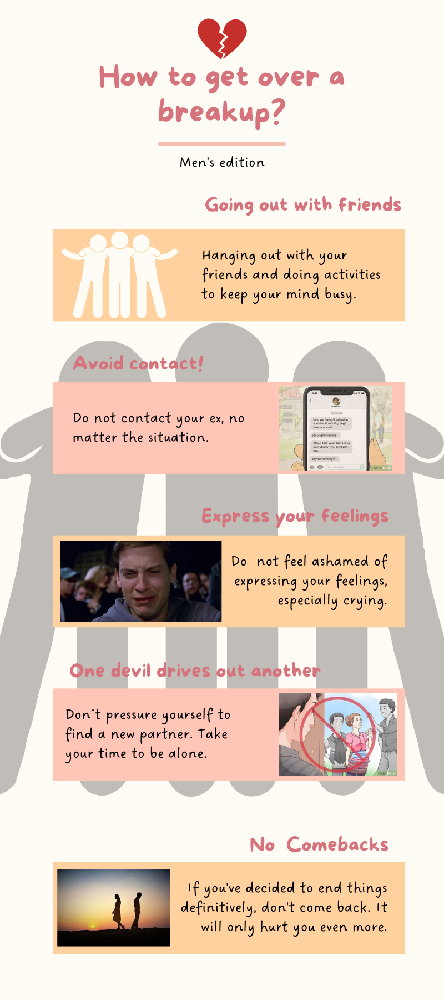

<div class="container mt-4">
    <div class="row justify-content-center">
        <div class="col-md-12">
            <div class="text-center">
                <h2>How to get over a break up</h2>
                <hr/>
                <div class="howto mt-4 mb-4">
                    
                </div>
            </div>
            <div class="row">
                <div class="col-md-12 mb-4">
                    <p>
                        The world of love is quite complex: sometimes you win, and sometimes you lose. As Def Leppard said: “Love bites”. However, it seems that when it is our turn to lose, the pain is so deep that we do not see a way out, and the only thing we would like to
                        do is to stay in bed all day without any motivation. The question is: what to do when everything seems to fall apart, how to act when things are over and we must move on? Well, we believe there is no right answer, but there are
                        some actions we can take to alleviate post-breakup feelings and make the situation more bearable. <br/> So, if you are heartbroken (or close to it), we invite you to read the following tips about how to
                        get over a breakup, and start feeling better about yourself and your single life.
                    </p>
                    <h4>1. Going out with your friends.</h4>
                    <p>
                        Keeping the mind busy is very important to avoid thinking about the other person, remembering the past and getting into an endless loop of sadness. That's why hanging out with your friends is a very good idea, as you can do many fun activities with
                        <span class="word_red">high-spirited</span> people, who care about you, listen to you and are willing to help you feel better. We don't just mean going out to party, but playing sports, going for a walk, going for ice cream, watching
                        movies, or doing anything else that keeps you away from what is causing you pain. <br/> As the <span class="word_red">widely-recognized</span> phrase says: sorrows are best spent in company.
                    </p>
                    <h4>2. Don’t contact your ex.</h4>
                    <p>
                        <span class="word_red">Don’t be as backwards-walker as a crab</span>. Once things are over, you must make sure there will be no room for "one last goodbye" or going to their house to "get your stuff". This will only hurt you more,
                        and make it take you even longer to get over things and move on with your life. Many times, distance is the only thing that helps heal wounds, and keeping it is essential to give yourself time to heal, both emotionally and mentally.
                        <br/> So better block that number, stay away from their social networks, and get as far as possible from her/him. We assure you that it will have a <span class="word_red">far-reaching</span> effect on you.
                    </p>
                    <h4>3. Express your feelings.</h4>
                    <p>
                        Don't be ashamed to express your feelings, it's better to cry, grab the pillow and scream, unburden yourself of everything, than to keep it all inside and carry it everywhere, like a heavy suitcase. We know that heartaches hit very hard, and it is inevitable
                        to feel defeated, but the important thing is to give yourself a space to experience all those negative feelings, but then get up, take the best attitude, <span class="word_red">shine as bright as a star</span>,
                        and go out to show the other person that you are okay, either with or without her. <br/> The show must go on!
                    </p>
                    <h4>4. One devil drives out another.</h4>
                    <p>
                        One devil drives out another or new love drives out another is exactly the opposite of what you should do. Men usually take breakups as competition and try to find a new partner as soon as possible. This is incorrect because it’s irresponsible to involve
                        another person when you’re not well and you’re not going to give 100% of yourself for a new relationship, so take your time to be alone. <br/> Be <span class="word_red">kind-hearted</span> not only to yourself,
                        but also to others.
                    </p>
                    <h4>5. No Comebacks.</h4>
                    <p>
                        Finally, the most obvious tip but the least applied: end things, no comebacks. <br/> We all know or maybe we are that person who is always in a <span class="word_red">never-ending</span> relationship. Oftenly, men make the first
                        steps looking to return with their ex, don’t send texts or try to find that person by chance. If you’ve decided to end the relationship definitivelty, don’t come back. It will only hurt you even more. <br/> To conclude, a breakup
                        will always be a difficult thing to deal with. However, you should behave like a mature person, take refuge in your friends and family, respect the other person's space and move on with your life <span class="word_red">as fast as a flash</span>.
                    </p>
                </div>
            </div>
        </div>
    </div>
</div>